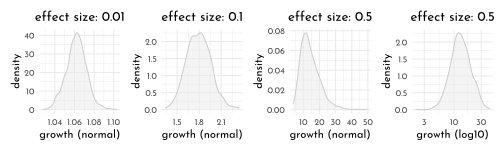
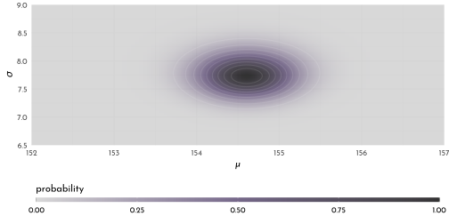

5 Rethinking: Chapter 4
Geocentric Models
by Richard McElreath, building on the Summary by Solomon Kurz
5.1 Why normal distributions are normal
5.1.1 Normal by addition
n_people <- 1e3
position <- crossing(person = 1:n_people,
step = 0:16) %>%
mutate(deviation = map_dbl(step, ~if_else(. == 0, 0, runif(1, -1, 1)))) %>%
group_by(person) %>%
mutate(position = cumsum(deviation)) %>%
ungroup()
p_all_steps <- position %>%
ggplot(aes(x = step, y = position, group = person)) +
geom_line(aes(color = person == n_people)) +
geom_point(data = position %>% filter(person == n_people), aes(color = "TRUE"), size = 1) +
geom_vline(data = tibble(step = c(4, 8, 16)),
aes(xintercept = step), linetype = 3, color = rgb(0,0,0,.5)) +
scale_color_manual(values = c(`TRUE` = clr2, `FALSE` = clr_alpha(clr0d, .05)), guide = "none") +
scale_x_continuous(breaks = c(0,4,8,16)) +
theme(panel.grid.major.x = element_blank(),
panel.grid.minor.x = element_blank())
plot_steps <- function(step_nr, data = position, add_ideal = FALSE){
data_step <- data %>%
filter(step == step_nr)
p <- data_step %>%
ggplot(aes(x = position)) +
geom_density(adjust = .2, color = clr0d, fill = fll0) +
scale_x_continuous(limits = c(-6, 6)) +
labs(title = glue("{step_nr} steps"))
if(add_ideal){p <- p +
stat_function(fun = function(x){dnorm(x, mean = 0, sd = sd(data_step$position))},
n = 501, color = clr2, linetype = 3)}
p
}
p_all_steps /
(plot_steps(step_nr = 4) + plot_steps(step_nr = 8) + plot_steps(step_nr = 16, add_ideal = TRUE))
5.2 Normal by multiplication and by log-multiplication
normal_by_multiplication <- function(effect_size = 0.1,
x_scale = ggplot2::scale_x_continuous(),
x_lab = "normal"){
tibble(person = 1:n_people,
growth = replicate(length(person), prod(1 + runif(12, 0, effect_size)))) %>%
ggplot(aes(x = growth)) +
geom_density(color = clr0d, fill = fll0) +
labs(title = glue("effect size: {effect_size}"), x = glue("growth ({x_lab})")) +
x_scale
}
normal_by_multiplication(effect_size = .01) +
normal_by_multiplication(effect_size = .1) +
normal_by_multiplication(effect_size = .5)+
normal_by_multiplication(effect_size = .5, x_scale = scale_x_log10(), x_lab = "log10") +
plot_layout(nrow = 1)
5.2.1 using the Gaussian distribution
- part of the exponential family
- probability density function
- \(\mu\): mean
- \(\sigma\): standard deviation
- \(\tau\): precision
\[ p( y | \mu, \sigma) = \frac{1}{\sqrt{2\pi\sigma^2}} exp \left( \frac{(y-\mu)^2}{2\sigma^2} \right)\\ \tau = 1 / \sigma^2 \\ p( y | \mu, \tau) = \sqrt{\frac{\tau}{2\pi}}exp(-\tfrac{1}{2}\tau(y - \mu)^2) \]
5.3 A language for describing models
*The first line defines the likelihood used in Bayes’ theorem, the other lines describe the priors used. The tilde means that the relationships are **stochastic*.**
re-describing the globe-toss model:
The count \(W\) is distributed binomially with a sample size \(N\) and the probabiliy \(p\). The prior for \(p\) is assumed to be uniform between zero and one
\[ W \sim Binomial(N, p)\\ p \sim Uniform(0, 1) \]
Substituting in Bayes’ theorem:
\[ Pr(p | w, n) = \frac{Binomial(w|n,p)~Uniform(p|0,1)}{\int Binomial(w|n,p)~Uniform(p|0,1) dp} \]
w <- 6
n <- 9
grid_data <- tibble(p_grid = seq(0,1, length.out = 101),
likelihood = dbinom(w, n, p_grid),
prior = dunif(p_grid, 0, 1),
posterior_unstand = likelihood * prior,
posterior = posterior_unstand / sum(posterior_unstand))
grid_data %>%
pivot_longer(cols = c(prior, likelihood, posterior),
names_to = "bayes_part",
values_to = "p") %>%
mutate(bayes_part = factor(bayes_part, levels = names(clr_bayes))) %>%
ggplot(aes(x = p_grid)) +
geom_area(aes(y = p, color = bayes_part, fill = after_scale(clr_alpha(color)))) +
scale_color_manual(values = clr_bayes, guide = "none") +
facet_wrap(bayes_part ~ ., scales = "free_y")
5.3.1 Gaussian model of height
5.3.1.1 The data
library(rethinking)
data(Howell1)
(data <- as_tibble(Howell1)) %>%
precis() %>% as_tibble(rownames = NA) %>% knitr::kable()| mean | sd | 5.5% | 94.5% | histogram | |
|---|---|---|---|---|---|
| height | 138.2635963 | 27.6024476 | 81.108550 | 165.73500 | ▁▁▁▁▁▁▁▂▁▇▇▅▁ |
| weight | 35.6106176 | 14.7191782 | 9.360721 | 54.50289 | ▁▂▃▂▂▂▂▅▇▇▃▂▁ |
| age | 29.3443934 | 20.7468882 | 1.000000 | 66.13500 | ▇▅▅▃▅▂▂▁▁ |
| male | 0.4724265 | 0.4996986 | 0.000000 | 1.00000 | ▇▁▁▁▁▁▁▁▁▇ |
(data_adults <- data %>% filter(age >= 18)) %>%
precis() %>% as_tibble(rownames = NA) %>% knitr::kable()| mean | sd | 5.5% | 94.5% | histogram | |
|---|---|---|---|---|---|
| height | 154.59709 | 7.7423321 | 142.8750 | 167.00500 | ▁▃▇▇▅▇▂▁▁ |
| weight | 44.99049 | 6.4567081 | 35.1375 | 55.76588 | ▁▅▇▇▃▂▁ |
| age | 41.13849 | 15.9678551 | 20.0000 | 70.00000 | ▂▅▇▅▃▇▃▃▂▂▂▁▁▁▁ |
| male | 0.46875 | 0.4997328 | 0.0000 | 1.00000 | ▇▁▁▁▁▁▁▁▁▇ |
data_adults %>%
ggplot(aes(x = height)) +
geom_density(adjust = .5, color = clr0d, fill = fll0) +
scale_x_continuous(limits = c(130,185))
5.3.1.2 The model
\[ \begin{array}{cccr} h_i & \stackrel{iid}{\sim} & Normal(\mu, \sigma) & \textrm{[likelihood]}\\ \mu & \sim & Normal(178, 20) & \textrm{[$\mu$ prior]}\\ \sigma & \sim & Uniform(0,50) & \textrm{[$\sigma$ prior]} \end{array} \]
where, \(iid\) means “independent and identically distributed”.
n_samples <- 1e4
prior_simulation <- tibble(
sample_mu = rnorm(n_samples, 178, 20),
sample_sigma = runif(n_samples, 0, 50),
prior_h = rnorm(n_samples, sample_mu, sample_sigma),
bad_mu = rnorm(n_samples, 178, 100),
bad_prior = rnorm(n_samples, bad_mu, sample_sigma)
)
p_mu <- ggplot() +
stat_function(fun = function(x){dnorm(x = x, mean = 178, sd = 20)},
xlim = c(100,250), color = clr0d, fill = fll0, geom = "area") +
labs(title = glue("*\U03BC* {mth('\U007E')} dnorm( 178, 20 )"),
y = "density", x = "*\U03BC*")
p_sigma <- ggplot() +
stat_function(fun = function(x){dunif(x = x, min = 0, max = 50)},
xlim = c(-5, 55),
color = clr1, fill = fll1, geom = "area") +
labs(title = glue("*{mth('\U03C3')}* {mth('\U007E')} dunif( 0, 50 )"),
y = "density", x = glue("*{mth('\U03C3')}*"))
p_prior_sim <- prior_simulation %>%
ggplot(aes(x = prior_h)) +
geom_density(color = clr2, fill = fll2, adjust = .4) +
scale_x_continuous(limits = c(0,356), breaks = c(0,73,178,283)) +
labs(title = glue("*h<sub>i</sub>* {mth('\U007E')} dnorm( *\U03BC*, {mth('\U03C3')} )"),
x = "height")
p_bad_prior <- prior_simulation %>%
ggplot(aes(x = bad_prior)) +
geom_density(color = clr2, fill = fll2, adjust = .4) +
scale_x_continuous(limits = c(-222,578),
breaks = c(-128,0,178,484), expand = c(0,0)) +
geom_vline(data = tibble(h = c(0,272)), aes(xintercept = h), linetype = 3)+
labs(title = glue("*h<sub>i</sub>* {mth('\U007E')} dnorm( *\U03BC*, {mth('\U03C3')} )<br>*\U03BC* {mth('\U007E')} dnorm( 178, 100 )"),
x = "height")
p_mu + p_sigma +
p_prior_sim + p_bad_prior &
theme(plot.title = element_markdown(),
axis.title.x = element_markdown())
5.3.1.3 grid approximation of the posterior distribution
n_grid <- 101
grid_data <- cross_df(list(mu = seq(from = 152, to = 157, length.out = n_grid),
sigma = seq(from = 6.5, to = 9, length.out = n_grid))) %>%
mutate(log_likelihood = map2_dbl(.x = mu, .y = sigma, .f = function(x, y){
dnorm(x = data_adults$height, mean = x, sd = y, log = TRUE) %>% sum()
}),
prior_mu = dnorm(mu, mean = 178, sd = 20, log = TRUE),
prior_sigma = dunif(sigma, min = 0, max = 50, log = TRUE),
product = log_likelihood + prior_mu + prior_sigma,
probability = exp(product - max(product)))
grid_data %>%
ggplot(aes(x = mu, y = sigma, z = probability)) +
geom_raster(aes(fill = probability)) +
geom_contour(color = rgb(1,1,1,.1)) +
coord_cartesian(xlim = range(grid_data$mu),
ylim = range(grid_data$sigma)) +
scale_fill_gradientn(colours = clr_grd5 %>% clr_alpha(alpha = .8),
limits = c(0,1)) +
coord_cartesian(xlim = range(grid_data$mu),
ylim = range(grid_data$sigma),
expand = 0) +
guides(fill = guide_colorbar(title.position = "top",
barwidth = unit(.9,"npc"),
barheight = unit(5, "pt"))) +
labs(x = " *\U03BC*", y = glue("*{mth('\U03C3')}*"))+
theme(legend.position = "bottom",
axis.title.x = element_markdown(),
axis.title.y = element_markdown())
Sampling from the posterior distribution
n_posterior_sample <- 1e4
samples <- grid_data %>%
slice_sample(n = n_posterior_sample, weight_by = probability, replace = TRUE)
p_samples <- samples %>%
group_by(mu, sigma) %>%
count() %>%
ungroup() %>%
ggplot(aes(x = mu, y = sigma, color = n)) +
geom_point(size = .4) +
scale_color_gradientn(colours = clr_grd5 %>% clr_alpha(alpha = .8)) +
coord_cartesian(xlim = buffer_range(grid_data$mu),
ylim = buffer_range(grid_data$sigma),
expand = 0) +
guides(color = guide_colorbar(title.position = "top",
barwidth = unit(.2,"npc"),
barheight = unit(5, "pt"))) +
labs(x = " *\U03BC*", y = glue("*{mth('\U03C3')}*"))+
theme(legend.position = "bottom",
axis.title.x = element_markdown(),
axis.title.y = element_markdown())
p_mu_dens <- samples %>%
ggplot(aes(x = mu)) +
geom_density(color = clr0d, fill = fll0) +
scale_x_continuous(limits = buffer_range(grid_data$mu), expand = c(0, 0)) +
labs(y = "marginal<br>density") +
theme(axis.title.x = element_blank(),
axis.text.x = element_blank(),
axis.title.y = element_markdown())
p_sigma_dens <- samples %>%
ggplot(aes(x = sigma)) +
geom_density(color = clr0d, fill = fll0) +
scale_x_continuous(limits = buffer_range(grid_data$sigma), expand = c(0, 0)) +
labs(y = "marginal density") +
coord_flip() +
theme(axis.title.y = element_blank(),
axis.text.y = element_blank())
p_mu_dens + patchwork::guide_area() +
p_samples + p_sigma_dens +
plot_layout(guides = "collect", widths = c(1,.3), heights = c(.3,1))
Exploration of long tail for \(\sigma\) when original sample size is small:
heights_subset <- sample(data_adults$height, size = 20)
grid_data_subset <- cross_df(list(mu = seq(from = 145, to = 165, length.out = n_grid),
sigma = seq(from = 4.5, to = 16, length.out = n_grid))) %>%
mutate(log_likelihood = map2_dbl(.x = mu, .y = sigma, .f = function(x, y){
dnorm(x = heights_subset, mean = x, sd = y, log = TRUE) %>% sum()
}),
prior_mu = dnorm(mu, mean = 178, sd = 20, log = TRUE),
prior_sigma = dunif(sigma, min = 0, max = 50, log = TRUE),
product = log_likelihood + prior_mu + prior_sigma,
probability = exp(product - max(product)))
samples_subset <- grid_data_subset %>%
slice_sample(n = n_posterior_sample, weight_by = probability, replace = TRUE)
p_samples <- samples_subset %>%
group_by(mu, sigma) %>%
count() %>%
ungroup() %>%
ggplot(aes(x = mu, y = sigma, color = n)) +
geom_point(size = .4) +
scale_color_gradientn(colours = clr_grd4 %>% clr_alpha(alpha = .8)) +
coord_cartesian(xlim = buffer_range(grid_data_subset$mu),
ylim = buffer_range(grid_data_subset$sigma),
expand = 0) +
guides(color = guide_colorbar(title.position = "top",
barwidth = unit(.2,"npc"),
barheight = unit(5, "pt"))) +
labs(x = " *\U03BC*", y = glue("*{mth('\U03C3')}*"))+
theme(legend.position = "bottom",
axis.title.x = element_markdown(),
axis.title.y = element_markdown())
p_mu_dens <- samples_subset %>%
ggplot(aes(x = mu)) +
geom_density(color = clr0d, fill = fll0) +
scale_x_continuous(limits = buffer_range(grid_data_subset$mu), expand = c(0, 0)) +
labs(y = "marginal<br>density") +
theme(axis.title.x = element_blank(),
axis.text.x = element_blank(),
axis.title.y = element_markdown())
p_sigma_dens <- samples_subset %>%
ggplot(aes(x = sigma)) +
geom_density(color = clr0d, fill = fll0) +
scale_x_continuous(limits = buffer_range(grid_data_subset$sigma), expand = c(0, 0)) +
labs(y = "marginal density") +
coord_flip() +
theme(axis.title.y = element_blank(),
axis.text.y = element_blank())
p_mu_dens + patchwork::guide_area() +
p_samples + p_sigma_dens +
plot_layout(guides = "collect", widths = c(1,.3), heights = c(.3,1))
5.3.1.4 Quadratic approximation of the posterior distribution
\[ \begin{array}{cccr} h_i & \stackrel{iid}{\sim} & Normal(\mu, \sigma) & \verb|height ~ dnorm(mu, sigma)|\\ \mu & \sim & Normal(178, 20) & \verb|mu ~ dnorm(178, 20)|\\ \sigma & \sim & Uniform(0,50) & \verb|sigma ~ dunif(0, 50)| \end{array} \]
model_spec <- alist(
height ~ dnorm(mu, sigma),
mu ~ dnorm(178, 20),
sigma ~ dunif(0, 50)
)
# "maximum a priori estimate"
map_starting_points <- list(
mu = mean(data_adults$height),
sigma = sd(data_adults$height)
)
model_heights_quap_weak_prior <- quap(flist = model_spec,
data = data_adults,
start = map_starting_points)
precis(model_heights_quap_weak_prior) %>%
as_tibble(rownames = NA) %>%
round(digits = 2) %>%
knitr::kable()| mean | sd | 5.5% | 94.5% |
|---|---|---|---|
| 154.61 | 0.41 | 153.95 | 155.27 |
| 7.73 | 0.29 | 7.27 | 8.20 |
Comparing how a stronger prior for \(\mu\) (narrower distribution) forces a larger estimate of \(\sigma\) to compensate for this.
quap(
flist = alist(
height ~ dnorm( mu , sigma ),
mu ~ dnorm( 178, 0.1 ),
sigma ~ dunif( 0, 50 )
),
data = data_adults,
start = map_starting_points) %>%
precis() %>%
as_tibble(rownames = NA) %>%
round(digits = 2) %>%
knitr::kable()| mean | sd | 5.5% | 94.5% |
|---|---|---|---|
| 177.86 | 0.10 | 177.70 | 178.02 |
| 24.52 | 0.93 | 23.03 | 26.00 |
The variance-covariance matrix of the quadratic aprroximation for sampling the multi-dimensional gaussian distribution:
vcov_mod_heights <- vcov(model_heights_quap_weak_prior)
vcov_mod_heights %>%
round(digits = 6) %>%
knitr::kable()| mu | sigma | |
|---|---|---|
| mu | 0.169740 | 0.000218 |
| sigma | 0.000218 | 0.084906 |
diag(vcov_mod_heights)#> mu sigma
#> 0.16973961 0.08490582round(cov2cor(vcov_mod_heights), digits = 5)\[\begin{bmatrix} 1 &0.00182 \\0.00182 &1 \\ \end{bmatrix}\]
sampling from the multi-dimensional posterior distribution
posterior_sample <- extract.samples(model_heights_quap_weak_prior, n = 1e4) %>%
as_tibble()
precis(posterior_sample) %>%
as_tibble() %>%
knitr::kable()| mean | sd | 5.5% | 94.5% | histogram |
|---|---|---|---|---|
| 154.612324 | 0.4138706 | 153.948054 | 155.262747 | ▁▁▅▇▂▁▁ |
| 7.728911 | 0.2926062 | 7.268824 | 8.196356 | ▁▁▁▁▂▅▇▇▃▁▁▁▁ |
5.3.2 Linear Prediction
ggplot(data_adults,
aes(height, weight)) +
geom_point(shape = 21, size = 1.5, color = clr1, fill = fll1)
\[ \begin{array}{cccr} h_i & {\sim} & Normal(\mu, \sigma) & \textrm{[likelihood]}\\ \mu_i & = & \alpha + \beta (x_i - \bar{x}) & \textrm{[linear model]}\\ % alternatively \overline{x} \alpha & \sim & Normal(178, 20) & \textrm{[$\alpha$ prior]}\\ \beta & \sim & Normal(0, 10) & \textrm{[$\beta$ prior]}\\ \sigma & \sim & Uniform(0,50) & \textrm{[$\sigma$ prior]} \end{array} \]
The current prior for \(\beta\) is a bad choice, because it allows negative as well as unreasonably high and low dependencies of \(h\) (height) on \(x\) (weight):
set.seed(2971)
N <- 100
linear_priors <- tibble(n = 1:N,
alpha = rnorm( n = N, mean = 178, sd = 20 ),
beta_1 = rnorm( n = N, mean = 0, sd = 10),
beta_2 = rlnorm( n = N, mean = 0, sd = 1)) %>%
expand(nesting(n, alpha, beta_1, beta_2), weight = range(data_adults$weight)) %>%
mutate(height_1 = alpha + beta_1 * (weight - mean(data_adults$weight)),
height_2 = alpha + beta_2 * (weight - mean(data_adults$weight)))
p_lin_pr <- ggplot(linear_priors, aes(x = weight, y = height_1, group = n)) +
labs(title = glue("{mth('*\U03B2* ~')} Normal(0, 10)"), y = "height")
p_log_pr <- ggplot(linear_priors, aes(x = weight, y = height_2, group = n)) +
labs(title = glue("{mth('*\U03B2* ~')} Log-Normal(0, 1)"), y = "height")
p_lnorm <- ggplot() +
stat_function(fun = function(x){dlnorm(x = x, meanlog = 0, sdlog = 1)},
xlim = c(0,5), geom = "area", color = clr2, fill = fll2, n = 501) +
labs(title = "Log-Norm(0, 0.1)", y = "density")
(p_lin_pr + p_log_pr &
geom_hline(data = tibble(height = c(0, 272), type = 1:2),
aes(yintercept = height, linetype = factor(type)), size = .4) &
geom_line(color = clr2, alpha = .25) &
scale_linetype_manual(values = c(`1` = 3, `2` = 1), guide = "none") &
coord_cartesian(xlim = range(data_adults$weight), ylim = c(-100, 400)) &
theme(plot.title = element_markdown())) +
p_lnorm
The log-normal prior seems more sensible, so we update the model priors as such:
\[ \begin{array}{cccr} \beta & \sim & Log-Normal(0, 1) & \textrm{[$\beta$ prior]}\\ \end{array} \]
5.3.2.1 Finding the posterior Distribution
xbar <- mean(data_adults$weight)
model_hight <- quap(
flist = alist(
height ~ dnorm( mu, sigma ),
mu <- alpha + beta * ( weight - xbar ),
alpha ~ dnorm( 178, 20 ),
beta ~ dlnorm( 0, 1 ),
sigma ~ dunif( 0, 50)
),
data = data_adults
)Table of marginal distributions of the parameters after training the model on the data
precis(model_hight) %>%
round(digits = 3) %>%
as_tibble(rownames = NA) %>%
knitr::kable()| mean | sd | 5.5% | 94.5% | |
|---|---|---|---|---|
| alpha | 154.602 | 0.270 | 154.170 | 155.034 |
| beta | 0.903 | 0.042 | 0.836 | 0.970 |
| sigma | 5.072 | 0.191 | 4.766 | 5.377 |
We also need thevariance-covariance matrix to fully describe the audratic approximation completely:
model_hight %>%
vcov() %>%
round(digits = 2) %>%
as.data.frame(row.names = row.names(.)) %>%
knitr::kable()| alpha | beta | sigma | |
|---|---|---|---|
| alpha | 0.07 | 0 | 0.00 |
| beta | 0.00 | 0 | 0.00 |
| sigma | 0.00 | 0 | 0.04 |
model_hight_smp <- extract.samples(model_hight) %>%
as_tibble()
model_hight_smp_mean <- model_hight_smp %>%
summarise(across(.cols = everything(), mean))
model_hight_smp %>%
ggpairs(
lower = list(continuous = wrap(ggally_points, colour = clr1, size = .2, alpha = .1)),
diag = list(continuous = wrap("densityDiag", fill = fll1, color = clr1, adjust = .5)),
upper = list(continuous = wrap(ggally_cor, size = 5, color = "black", family = "Josefin sans")))
Plotting the posterior distribution against the data
ggplot(data_adults, aes(x = weight, y = height)) +
geom_point(color = clr0d) +
stat_function(fun = function(x){model_hight_smp_mean$alpha + model_hight_smp_mean$beta * (x - xbar)},
color = clr2, n = 2)
A demonstration of the the effect of sample size on the uncertainty of the linear fit
sub_model <- function(N = 10){
data_inner <- data_adults[1:N,]
xbar <- mean(data_inner$weight)
model_hight_inner <- quap(
flist = alist(
height ~ dnorm( mu, sigma ),
mu <- alpha + beta * ( weight - xbar ),
alpha ~ dnorm( 178, 20 ),
beta ~ dlnorm( 0, 1 ),
sigma ~ dunif( 0, 50)
),
data = data_inner
)
model_hight_smp_inner <- extract.samples(model_hight_inner) %>%
as_tibble() %>%
sample_n(20)
ggplot(data_inner, aes(x = weight, y = height)) +
geom_point(color = clr0d) +
(purrr::map(1:20, function(i){stat_function(
fun = function(x){model_hight_smp_inner$alpha[i] + model_hight_smp_inner$beta[i] * (x - xbar)},
color = clr2, n = 2, alpha = .1)})) +
labs(title = glue("N: {N}"))
}
sub_model(10) + sub_model(50) +
sub_model(150) + sub_model(352) 
adding intervals
mu_at_50 <- model_hight_smp %>%
mutate(mu_at_50 = alpha + beta * (50 - xbar))
p_density <- mu_at_50 %>%
ggplot(aes(x = mu_at_50)) +
geom_density(adjust = .5, color = clr0d, fill = fll0) +
stat_function(fun = function(x){demp(x, obs = mu_at_50$mu_at_50, density.arg.list = list(adjust = .5))},
xlim = mu_at_50$mu_at_50 %>% PI(), geom = "area", fill = fll2, color = clr2) +
geom_vline(data = tibble(weights = mu_at_50$mu_at_50 %>% PI()), aes(xintercept = weights), linetype = 3)+
scale_x_continuous(glue("{mth('*\U03BC*')} | weight = 50"), limits = c(157.7, 160.8)) +
theme(axis.title.x = element_markdown())
mu_at_50$mu_at_50 %>% PI()#> 5% 94%
#> 158.5857 159.6717weight_seq <- seq(from = 25, to = 70, by = 1)
model_hight_mu <- link(model_hight, data = data.frame(weight = weight_seq)) %>%
as_tibble() %>%
set_names(nm = weight_seq) %>%
pivot_longer(cols = `25`:`70`,names_to = "weight", values_to = "height") %>%
mutate(weight = as.numeric(weight))
p_dots <- model_hight_mu %>%
ggplot(aes(x = weight, y = height)) +
geom_point(aes(color = weight == 50), alpha = .1, size = .3) +
scale_color_manual(values = c(`TRUE` = clr2, `FALSE` = clr0d), guide = "none")
p_interval <- model_hight_mu %>%
group_by(weight) %>%
summarise(mean = mean(height),
PI_lower = PI(height)[1],
PI_upper = PI(height)[2]) %>%
ungroup() %>%
ggplot(aes(x = weight)) +
geom_point(data = data_adults, aes(y = height), color = clr0, size = .3) +
geom_ribbon(aes(ymin = PI_lower, ymax = PI_upper), fill = clr2, alpha = .35) +
geom_line(aes(y = mean))
p_density + p_dots + p_interval